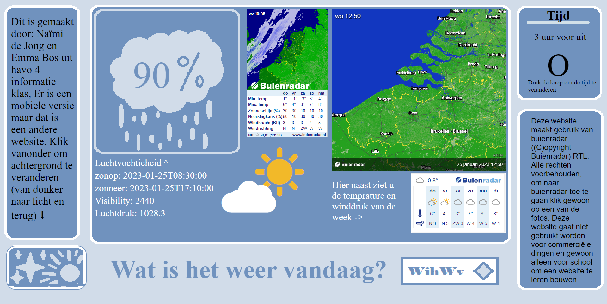
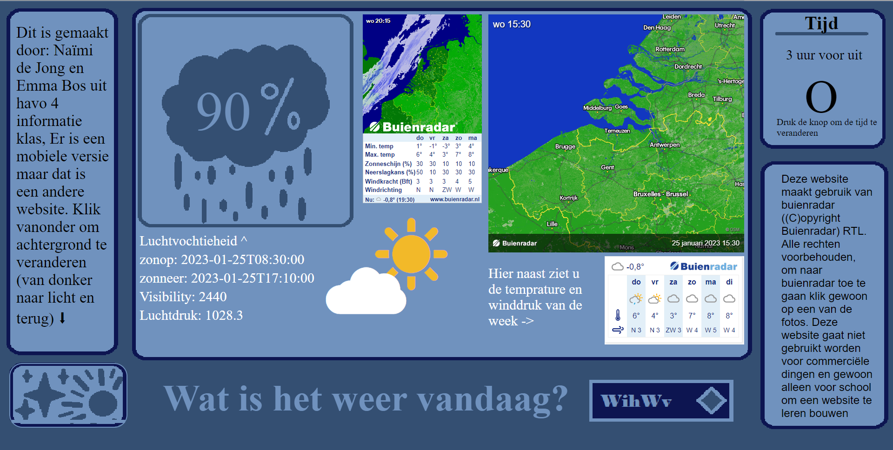

Why HBO-ICT is something for me
I chose ICT because my family has experience in it, which sparked my interest in the field. My dad works at Dow in Terneuzen as a programmer, and he got me interested in computers and games. Furthermore, at my previous school, we had a subject called "Informatica," which is similar to ICT, but ICT is broader in scope. I really enjoyed that subject and was quite good at it. I also gained some experience in the ICT field thanks to my older sister, who offered me a vacation job at the company where she works. I had to build a website there, and I enjoyed solving problems around the office—especially when I was actually able to fix them! With this experience and my growing interest in ICT, I believe that HBO-ICT is the right path for me.
All my experience in ICT Field:
- Informatica as subject in middle school
- Vacation job in the ICT Field
- Minecraft mods
- Creating roblox games
For Informatica, I had to create a website at one point as well; this was two years ago. When you compare this website to the one I built back then, you will see a great difference, which shows my development. The website is shown in the images below. The goal of that website was to display the upcoming weather, similar to "Buienradar." It was a group project of two, where we divided the work: my partner would write the documents, and I would create the website. The website had both light and dark modes, and I designed it entirely on my own.
 